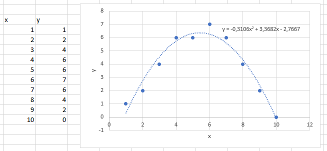

Polynomimalli
Polynomimalli¶
Polynomimalleissa dataan sovitettu funktio on muotoa \(y=a_0+a_1 x+a_2 x^2+a_3 x^3+ \ldots + a_n x^n\).
Kun otetaan mukaan tarpeeksi \(x\):n potensseja, malli saadaan sopimaan lähes täydellisesti melkein millaiseen tahansa dataan. Tällainen malli ei kuitenkaan yleensä ole tarkoituksenmukainen. Excelissä polynomimallin sovitus tehdään kuvaajan ja trendiviiva-toiminnon avulla. Keskitytään tässä vain toisen asteen polynomimalliin, joka voidaan esittää myös muodossa \(y=ax^2+bx+c\).
Toisen asteen polynomifunktion kuvaaja on ylöspäin aukeava (“kuoppa”), jos \(a>0\), ja alaspäin aukeava (“mäki”), jos \(a<0\). Ylöspäin aukeavalle kuvaajalle voidaan laskea minimikohta ja vastaava minimiarvo; alaspäin aukeavalle taas voidaan laskea maksimikohta ja vastaava maksimiarvo. Kummassakin tapauksessa ääriarvokohta löytyy laskemalla
\(x=-\frac{b}{2a}\)
ja vastaava ääriarvo saadaan sijoittamalla kyseinen \(x\):n arvo funktion yhtälöön.
Seuraavan kuvan esimerkissä maksimikohta on yhtälön mukaan
\(x=-\frac{3.3682}{2\cdot(-0.3106)}=5.422\)
ja maksimiarvo
\(y=-0.3106\cdot5.422^2+3.3682\cdot 5.422-2.7667=6.365\).
